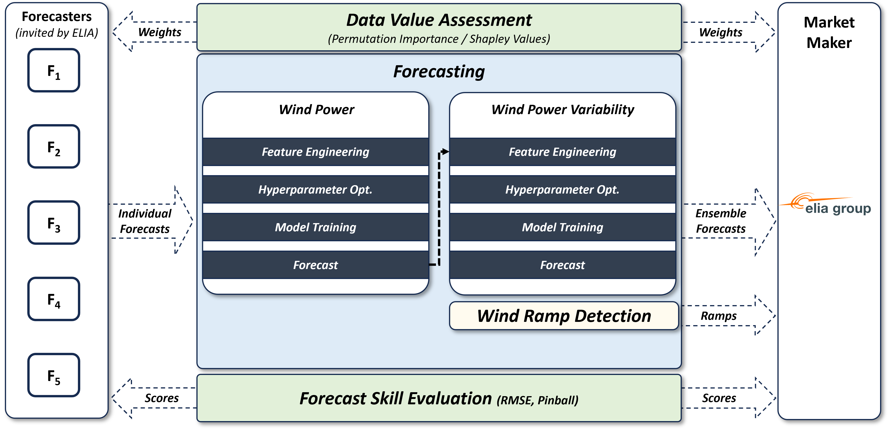

Introduction
Welcome to Predico, a Collaborative Forecasting Platform initiative designed to enhance forecasting accuracy through collaboration between market makers and forecasters. In its current form, this platform consists exclusively of an API server, with no front-end available. Therefore, every interaction is done via HTTPs requests.
Important!
- This platform is a proof of concept, so there might be changes to improve the outcomes for all parties.
Definitions
- Market Maker: An entity that owns resources (e.g., wind farms) or manages a grid (e.g., a TSO) and seeks forecasts by opening and funding collaborative forecasting market sessions.
- Forecaster: An individual or organization registered in the platform, aiming to submit forecasts to collaborative forecasting challenges opened by the Market Maker, competing for the available prize money in each session.
- Market Session: A specific period during which Market Makers can create forecasting challenges, and Forecasters can submit forecasts for the open challenges.
- Market Challenge: An opportunity, published by the Market Maker, with meta-data regarding a forecasting challenge that Forecasters can try to submit forecasts for.
- Gate Closure Time: The deadline by which forecasts must be submitted for a market session.
- Forecast Variables: Quantities to be forecasted, such as quantile 10, 50, 90, and conditional mean.
- Ensemble Forecast: An aggregate forecast computed from multiple forecasters’ submissions.
Collaborative Forecasting Sessions
Below, you can find a sequence diagram illustrating the dynamics of a collaborative forecasting session, which is generally organized in three separate phases.
- Phase 1: A new market session is scheduled to open.
- Phase 2: Market Makers post new challenges, such as submitting day-ahead forecasts for specific assets (aka resources) in their portfolio.
- Phase 3: Forecasters log into Predico API, download raw measurements data, build their models, and submit forecasts.
- Phase 4: Forecasters log into Predico API, preview their skill scores and contribution importance to the final ensemble forecasts, to be delivered to the Market Maker.
See the service sequence diagram, below

Forecasting Components Breakdown
The Predico platform's forecasting process is structured into various modules, as illustrated in the diagram below. This breakdown highlights the main stages of wind power and wind power variability forecasting, and how the contributions from different forecasters are evaluated.
- Data Value Assessment: Using methods such as Permutation Importance and Shapley Values, this component assesses the value of data inputs, helping identify the most influential variables in forecasting accuracy.
- Forecasting: This is divided into two parallel processes:
- Wind Power: Forecasts are generated through a series of steps including feature engineering, hyperparameter optimization, model training, and the final forecast generation.
- Wind Power Variability: A similar process is followed here, focusing on capturing fluctuations in wind power output, which includes feature engineering, hyperparameter optimization, model training, and forecast generation.
- Wind Ramp Detection: Identifies sudden changes or "ramps" in wind power, which are crucial for managing grid stability and operational decisions.
- Forecast Skill Evaluation: This stage evaluates the performance of forecasters using metrics like Root Mean Square Error (RMSE) and Pinball Loss. These scores help rank forecasters based on their forecast skill, per challenge participation.
The interaction of these components with market makers and forecasters is shown in the diagram:
See the service forecasting modules diagram, below
Useful Resources
To help you get started with the Predico platform, we've prepared resources that you can download:
- Read the platform Participation Rulebook.
- Check our API documentation for detailed information on how to interact with the platform.
- Download the Forecaster Jupyter Notebook (see more on how to use Jupyter).
- Download the Bruno Collection (see more on how to use Bruno).
These resources include sample code and data to assist you in building models and submitting forecasts.
Contact Us
If you have any questions or need assistance, feel free to reach out to us: Forecasters may contact Elia with questions or concerns at predico@elia.be.